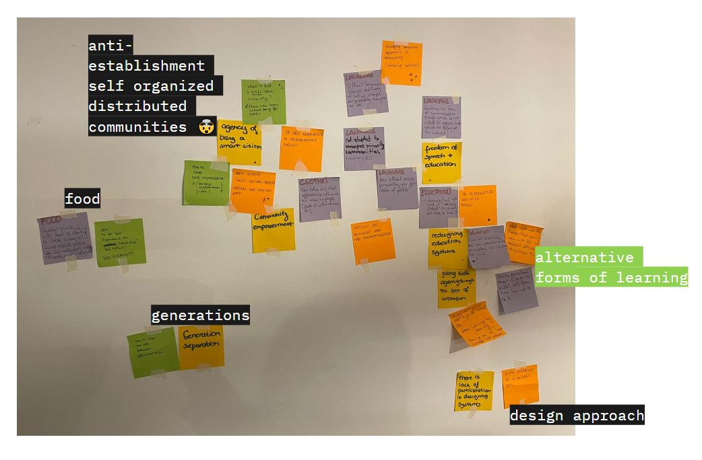
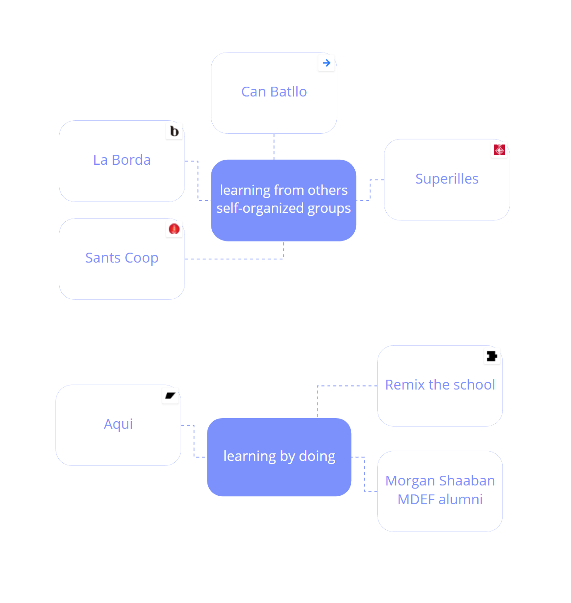
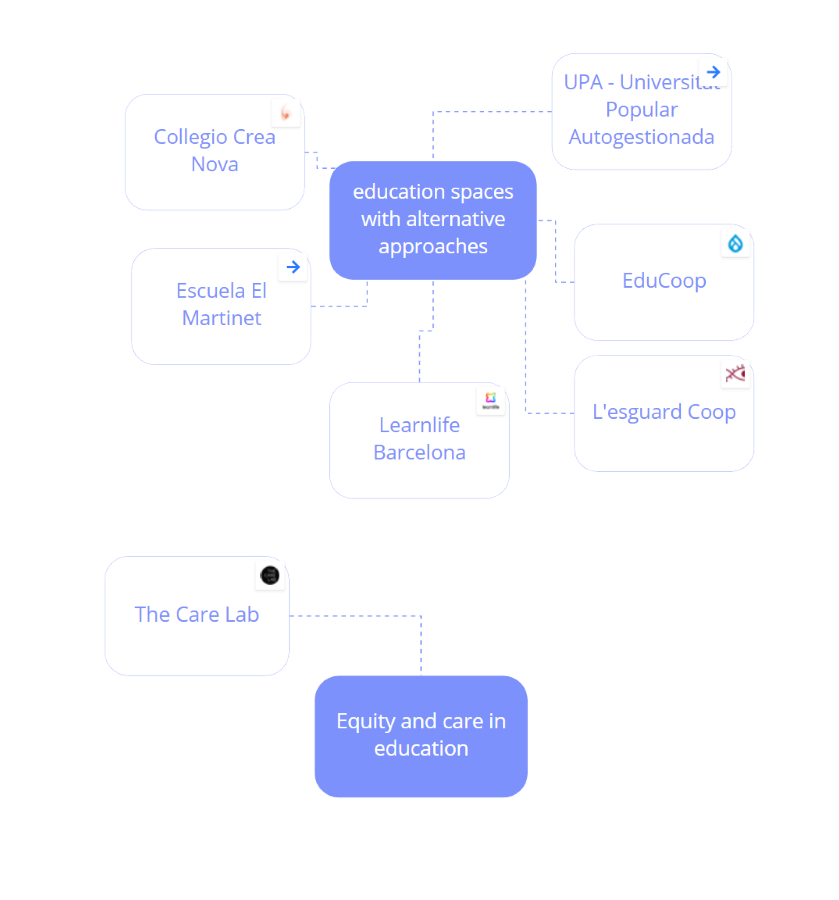

community engagement
23nd to 26th of November 2021
faculty: HOLON - Markel Cormenzana, Merce Rua
To give some context, we have two weeks to conduct a collective design experiment in context and involving others. Our collective had an intervention in mind and we were starting to think about the logistics, finding the place for our workshop, inviting the participants etc.
This seminar was useful to force us to take a step back in our process before rushing to the intervention. We redefined our challenge and started mapping the local community in Barcelona already working on the topic.
our challenge
We studied in systems created by the needs of previous generations and led by them. Today's needs changed and the hierarchy in teaching and learning should change as well. How can we change what we learn and how we learn it? How can we create new ways of learning, by raising our voice and showing our needs? Also how can we be aware of those needs?
identifying the local ecosystem
We started mapping the communities in Barcelona already working on this topic. We did a focus on a few of them to understand their current context and think about potential collaborations.


actions needed to solve the challenge
We listed on this map a list of actions, projects, initiatives we think would contribute to solve our challenge. It is still in progress as we continue exploring the topic and meeting with the ecosystem involved. Our design intervention is not defined yet so it doesn't appear on the map.
See the collective board in details